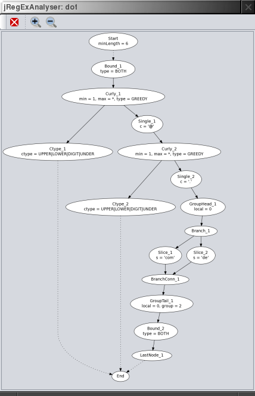

Reference
Tool Bar
New Window
Create a new jRegExAnalyser main window. The new window will run in the same process.
Exit
Close jRegExAnalyser main window. The process ends when all main windows are closed.
Clear History
Clear history of last used regular expressions. If multi line editing mode was activated, this also re-enables single line editing of regular expressions.
Import Test Text
Import test text. The character set used to load the text can be specified in the preferences.
Recent Test Text
Import a recently used test text again.
Visualise Pattern

Visualises the compiled structure of the regular expression. To get an impression of the compiled pattern this should be self explanatory. The detailed mechanics of expression matching are beyond the scope of this document. If you're interested just have a look at the Pattern.Node subclasses.
Note, that also the Pattern Explorer in the Matching tab provides a view on the compiled pattern. The Pattern Explorer view is simpler, but highlights the corresponding entries for a selected item in the Matcher Operations table (see Regular Expression Results).
A working Graphviz installation is required. The pattern is exported in the dot filed format as a directed graph. Then the dot utility is called to convert the graph into a PNG image file, which is opened and displayed.
Multiple visualisations in the same session will use the same file names and therefore subsequently overwrite previous dot files and PNG images. After closing jRegExAnalyser these files will be deleted automatically. The file name actually used is displayed in the status line. To keep or edit these files simply copy them away before closing jRegExAnalyser.
Preferences
Set the desired charset for text import, the Look'n'Feel and the history size.
If line wrap is enabled the test text and the replacement result text lines will wrap around. Otherwise the text is not wrapped and scrolled instead, which is the default.
The Permanent Matching setting enables or disables the live update of matching results when the regular expression, the test text or other options are changed. If you enable this feature (which is the default), you won't need the apply function for most cases.
To analyze large documents or very long running expressions you can disable this feature.
On start-up as standalone application (not via WebStart) jRegExanalyser checks if a newer version is available and displays a message box in this case. If you do not like this feature it can be disabled.
Help & About
Help opens the jRegExAnalyser home page. If your Java environment does not support this functionality, an information popup is displayed instead.
About shows the about box.
Regular Expression Entry
Regular Expressions can be entered directly into the combo box.
If you need multi line edit functionality, open the edit dialogue.
You might also consider setting the COMMENTS flag (i.e. ignoring whitespace and comments in the expression) if using multi line regular expressions.
If you enter a multi line expression, the combo box line edit is disabled and this control just features the history.
To get the single line edit in the combo box back, clean the history using the toolbar function.
Contrary to Java source code, you do not use an additional level of escaping. You just enter the regular expression. To search for example for a literal . you have to enter the expression \..
Using the convert to string literal button you get your regular expression ready to paste into Java source code, Pattern p = Pattern.compile("\\."); in this example.
To apply the regular expression to the test text use the apply button. In case of an syntax error, you get an error message. Otherwise the expression is compiled, and the results are displayed.
For an explanation of all the checkbox options see the corresponding Java API documentation. Every check box just turns on the corresponding flag.
The mode choice determines if the whole pattern has to match (one match() operation), or the pattern is searched multiple times (several find() operations).
Regular Expression Results
After applying a regular expression, all matches are highlighted.

The Matches tree shows all matches, and for matches containing groups every matching group. Depending on the selection in the match tree, the relevant text gets highlighted.

Like the Visualise Pattern function, the pattern explorer tree provides a view of the compiled structure of the regular expression.
The matcher operations table shows all the steps of the pattern matching engine which where necessary to apply the expression. If you select an operation, the corresponding text position (column 'Pos') is highlighted in the text area and the node in the pattern explorer is highlighted. The last column shows the boolean result ('T' true, 'F' false) of the matching step. This helps to determine why a specific pattern does match or does not match. If the position jumps back to a lower value in succeeding lines (so called backtracking) this may indicate a slowly performing pattern, if this happens ridiculously often.
If the Permanent Matching feature is enabled, you won't need the apply function very often. For example to add a pattern to the history the apply button is still needed, or if you decide to disable Permanent Matching for large documents or long running patterns.
Search and Replace

In the replacing tab you can enter a replacement string and see the resulting text. This is helpful if you like to investigate replacements, especially if they contain back-references.
Split Results

The split tab shows the result from splitting up the test text with the regular expression using the given limit value with the Pattern.split(input, limit) operation.
A limit of 0, which is also the default behavior of String's split() method, will discard trailing empty strings. A positive limit will actually limit the result set and returning the rest of the input text unchanged.